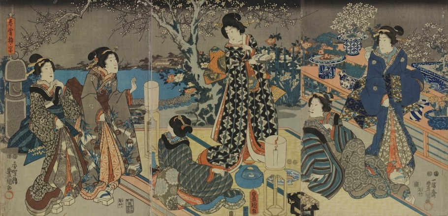

History
The first dwarfed trees occurred naturally in the wild and were discovered growing in the mountains of China.
They were prized because their unique aged and gnarled appearance was not created by human hands. Thousands of years ago,
the Taoists believed that recreating aspects of nature in miniature form endowed that particular recreation with a magical
concentrated energy. This art form known as Penjing means tray scenery. Penzai or Punsai, a form of Penjing, translates into tray plant,
which typically involved a landscape created with miniature trees and rocks.The Chinese developed the pruning and binding
techniques that gave the trees an aged appearance along with unusually shaped features. Some believe the Toaists purposely
shaped the branches, trunks and root structures to mimic the bodies of dragons, serpents and other animals of Chinese folklore.
Others contend that the structural deformities more closely resembled yoga positions. Though the Buddhists undoubtedly created
the Penzai for centuries, mention of the trees did not appear in documented form until around 600 A.D. The first pictorial evidence
of the Penzai tree appeared in 706 A.D. in the tomb of Prince Zhang Huai. Upon entering the tomb, archeologists discovered painted
frescoes depicting female servants carrying Penjing, which contained miniature trees and rocks.

Introduction To Japan
Also during this time, under the rule of the Hang Dynasty, Chinese monks migrated to Japan and other parts of Asia, taking with
them the art form and examples of Penzai. The Japanese monks quickly learned the techniques required for making the miniature
trees, which later became known as Bonsai. The Japanese also developed their own methods creating their own versions of the dwarfed
trees, which many believed symbolized the harmony between man, soul and nature. As in China, the trees gained honor and reverence
in Japan. The writer of an ancient scroll dated around 1195 A.D. expresses the appreciation and pleasure he derives from gazing
at the unusually deformed little trees. From the monasteries of the monks, bonsai trees made their way to the homes of the
royals and the affluent. The trees then became status symbols and also reflected honor. By the 14th century, bonsai trees were a
highly regarded art form. Bonsai owners originally displayed the plants outdoors. The affluent later created special shelves indoors
which provided the bonsai with a place of honor. Beginning in the 1600s, the art form evolved again. Pruning techniques used generally
removed all but the essential parts of the plant, which created a minimalist effect. These methods reflected Japanese culture and
philosophy, which believed that refining one’s lifestyle meant eliminating all but the necessary elements. This philosophy holds true
of the culture today and visitors see these simplistic elements in modern day Japanese gardens.
Centuries Old Techniques
The trees, which stood approximately one to two feet in height, required two to twenty years of masterful cultivation and care. The
Japanese chose some species of fruit and flower bearing trees in addition to varied species of pine. The branches, trunks and roots of the
tree obtained their odd appearance by twisting these areas into the desired shape and holding the configuration using bamboo and wire.
Parts of the plant also endured burning or cutting. Artists also commonly grafted new branches, which helped create a particular shape.
They created the illusion of age by smearing parts of the tree with sweet syrup, which enticed termites into feasting on the wood. After
the termites burrowed to specified depths, artists removed the insects and allowed the tree to undergo a healing process. The new wood and bark
more closely resembled a much older tree. The miniature trees also commonly shared a pot with other landscaping features that included rocks and
moss.
Read more.